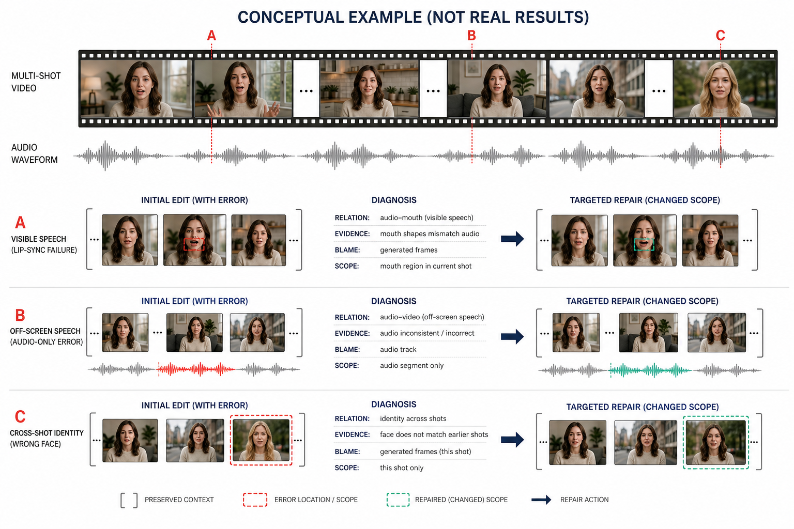
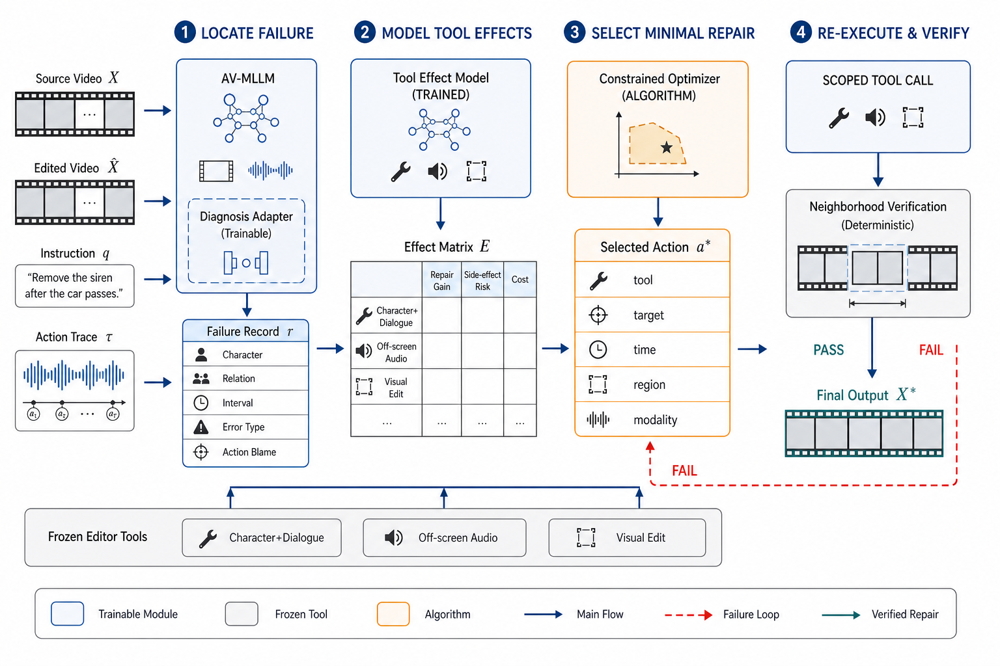

PersonaRepair
面向长视频多人物音画编辑的工具效果感知非退化修复
摘要
音视频编辑 Agent 已能将自然语言指令分解为视觉、语音和音频子任务，并调用专业工具生成结果。然而，在包含人物替换、台词修改、画外音编辑和纯视觉修改的长视频中，现有方法通常只能给出整体评价并重新运行整个分支，无法确定哪个人物的哪段音画关系失败，也无法预测重做会破坏哪些已经正确的内容。本文提出 PersonaRepair：一个面向长视频多人物音画编辑的诊断与修复框架。首先，身份感知错误定位器结合最终成片、人物轨迹、声纹、台词和工具轨迹，将失败定位到“人物—关系—时间—模态”单元，并预测责任操作。其次，Tool Effect Model 学习冻结编辑器对目标约束的修复增益、对保护约束的副作用及调用成本。最后，约束修复器选择满足目标且修改范围最小的候选；只有当目标错误下降且已正确邻域不退化时，结果才被接受。为系统评价该任务，我们设计覆盖画内/画外切换、跨镜头人物重现、多人交替和非目标保持的长视频协议。PersonaRepair 不替代通用 AVE-Agent，而是为其增加可定位、可归因和低破坏的可靠修复层。
1. 引言
现有音视频编辑系统越来越善于“生成一次结果”，但仍不善于回答：结果中的哪一处关系错了，以及怎样在不破坏正确内容的前提下修好它。
考虑一条真实后期需求：“将 12:10–13:00 的角色 A 替换为角色 B，把他说的‘明天见’改为‘周末见’，调整 18:03 的画外音语气，同时保持其他人物、背景和环境声。”系统需要在跨镜头范围内绑定人物外观、声纹和台词；在人物可见且嘴部清晰时联合修改语音与口型；在画外音区间只改变音频；在纯视觉编辑中锁定对白和环境声。三个专业模型即使单独表现良好，组合后仍可能产生人物身份漂移、台词归错说话者、局部唇音不同步、画外音污染画面或非目标声音消失。
近期工作已经覆盖了大量基础能力。InstructAV2AV [3] 可组合修改人物外观、音色和台词；AVI-Edit [4] 实现实例级音画同步编辑；CineSRD [5] 能在影视长视频中注册画内人物并补充画外说话者；MMLVE-Agent [6] 进一步研究多指令、多镜头长视频的一致编辑。与此同时，AVE-Compass/AVE-Agent [1] 将复杂音视频指令分解为任务拓扑，并通过 planner、executor 和 mixed evaluator 进行反思式重试。这些工作意味着“多工具 Agent”“跨模态任务图”和“评价后重新生成”本身已不能构成充分创新。

本文关注一个更窄但可验证的问题：如何在最终渲染结果中定位人物中心的跨模态失败，并根据专业编辑器的实际副作用选择最小的非退化修复？我们不把人物—镜头—音频图作为创新，因为 AVA-Encoder [2] 已提出可操作的 Film Knowledge Graph 与关联子图编辑；该图在本文中仅作为索引。核心方法围绕 Locate–Model–Repair 三步展开：
- 身份感知的细粒度音画错误定位。 在最终成片上预测失败人物、关系、时间区间、错误类型和责任操作，而不是只返回整体质量分数。
- Tool Effect Model。 从真实执行轨迹中学习每个冻结编辑器对目标约束的修复增益和对已正确内容的连带风险。
- 约束最小的单调非退化修复。 联合优化成功概率、修改范围和成本；候选只有在修复目标且保护邻域不退化时才进入已接受状态。
3. PersonaRepair
给定源视频 \(X=(V,A)\)、用户指令 \(q\)、初始编辑结果 \(\hat X\) 和工具轨迹 \(\tau=(a_1,\dots,a_n)\)，PersonaRepair 输出修复结果 \(X^\star\)。系统使用镜头检测、人物跟踪、ASR、speaker diarization、active-speaker detection 和声纹模型构建检索索引；这些前端可以替换，不作为核心贡献。三个冻结后端分别处理人物与台词联合替换、画外音修改和纯视觉修改。
一个可验证约束表示为：
其中 \(s_i,o_i\) 是人物、声纹、台词、轨迹或媒体区域，\(r_i\) 是关系，\(I_i\) 是证据时间区间，\(\mathcal M_i\) 是相关模态，\(y_i\) 是目标状态。约束分为：要求新人物/台词成立的目标约束，要求人物—声纹—台词—嘴部一致的耦合约束，以及要求背景、非目标人物和环境声不变的保护约束。

3.1 身份感知的细粒度音画错误定位
共享 Audio-Video MLLM 的 Diagnosis Adapter 接收 \(X,\hat X,q,\tau\) 以及按人物和时间检索的专业证据。对每个约束 \(c_i\)，诊断器输出：
其中 \(\hat z_i\) 是约束满足概率，\(\hat I_i\) 是失败证据区间，\(\hat e_i\) 是错误类型，\(\hat b_i\) 是责任动作分布。专业证据包括：ASR/forced alignment 检查台词内容和词边界；speaker verification 检查声纹；active-speaker 与 lip-sync 模型检查可见说话者和同步；人脸/人体特征检查跨镜头身份；源—结果掩码差异检查非目标视觉及音频保持。MLLM 负责处理这些证据之间的关系，而不是替代所有专用模型。
对于短错误，系统先在粗粒度窗口检测，再在高风险窗口预测起止边界。训练目标为：
监督来自真实失败和可控注入：单词替换、局部音频平移、声纹交换、错误 active speaker、身份漂移、画外音视觉泄漏以及非目标音频污染。故障参数提供精确时间与责任动作标签。低置信度身份或说话者不会触发自动生成，而进入人工确认。
3.2 冻结编辑器上的 Tool Effect Model
工具描述只能告诉 Agent “模型声称能做什么”，不能反映其在侧脸、遮挡、多人、混响或长镜头条件下的实际副作用。我们训练轻量 Tool Effect Model \(E_\psi\)，输入当前媒体状态摘要、候选动作 \(a_j\)、目标与保护约束，预测：
其中 \(g_{ji}\) 是动作修复失败约束 \(c_i\) 的概率，\(r_{ji}\) 是破坏已通过约束的概率，\(\hat\Omega_j\) 是预计影响的时间—空间—模态范围，\(\hat C_j\) 是计算或 API 成本。训练样本直接来自冻结编辑器的调用前后约束差分；模型采用 ensemble 表达认知不确定性，对未见工具和分布外状态使用悲观修复收益与保守风险上界。
Effect Model 必须独立评价，而不能只依靠端到端结果。实验报告约束差分误差、风险校准、候选工具排序和 leave-one-backend-out 泛化；否则它可能退化成普通工具分类器。
3.3 约束最小的单调非退化修复
对失败集合 \(\mathcal F\)，系统根据错误证据、责任动作和工具 schema 生成候选修复集 \(\mathcal A_R\)。候选动作显式指定工具、人物、时间区间、空间掩码、可写模态和参数。若声音正确而嘴型失败，候选仅开放视频嘴部；若目标是画外音，视觉模态保持只读。
令 \(x_j\in\{0,1\}\) 表示是否执行候选 \(a_j\)，\(d_j,s_j,c_j\) 分别表示重做时长、空间—模态范围和成本。优化目标为：
满足失败覆盖、保护风险、工具依赖和互斥约束：
我们使用整数规划求解候选集内的最小动作组合，但不将 ILP 本身作为贡献。动作先在当前已接受版本的副本上执行；验证器重新检查失败约束及与该动作共享人物、时间或模态的保护邻域。只有当目标缺陷下降且保护约束变化不超过容差时，候选才被接受，否则丢弃候选并保留原版本。因而更准确的表述是“单调接受的非退化修复”，而不是对所有感知属性作绝对无回退保证。
4. 实验
4.1 实验设置与评测协议
数据。 PersonaRepair-Bench 计划包含经过授权的编辑前后视频、指令、工具轨迹、跨镜头人物 ID、逐词台词、speaker/active/off-screen 标签，以及每个失败的时间区间和责任操作。主集合覆盖 2–20 分钟视频，压力集合覆盖 30–90 分钟。训练、验证和测试按作品与人物身份划分，避免同一人物泄漏。
任务。 包含人物＋台词＋声纹联合替换、只改台词、只改人物、只改画外音、纯视觉修改，以及这些操作在同一视频中的组合。困难条件包括相似人物、侧脸、遮挡、多人同屏、重叠语音、画内/画外切换和人物远距离重现。
基线。 比较无修复、全段重生成、固定窗口局部重做、直接 MLLM/ReAct、AVE-Agent 式 evaluator feedback、独立专业指标 ensemble、Crayotter 式选择性重执行及不使用 Effect Model 的规则规划。Oracle 错误区间和 Oracle 工具效果分别给出定位与规划上界。所有方法共享编辑后端、最大重试次数和调用预算。
指标。 诊断报告约束 Macro-F1、AUROC、校准误差、区间 mAP、Temporal IoU、边界误差和责任动作 Recall@k；生成质量报告 WER/CER、speaker/face identity、active-speaker、lip-sync、非目标视觉与音频保持；修复报告单轮与预算内成功率、No-Regression Rate、修改时长/区域比例、调用次数及实际成本。
4.2 端到端修复性能
| 方法 | 修复成功 ↑ | NRR ↑ | 非目标保持 ↑ | 修改时长 ↓ | 成本 ↓ |
|---|---|---|---|---|---|
| Full re-edit | 待测 | 待测 | 待测 | 待测 | 待测 |
| MLLM reflection | 待测 | 待测 | 待测 | 待测 | 待测 |
| AVE-Agent-style | 待测 | 待测 | 待测 | 待测 | 待测 |
| Metric ensemble + rules | 待测 | 待测 | 待测 | 待测 | 待测 |
| PersonaRepair | 待测 | 待测 | 待测 | 待测 | 待测 |
| Oracle localization | 待测 | 待测 | 待测 | 待测 | 待测 |
主结果需要同时支持三个结论：PersonaRepair 修复更多失败；重新编辑的媒体范围更小；缩小范围没有以破坏已正确内容为代价。仅提高整体 MLLM 偏好不足以证明方法有效。
4.3 错误定位与工具效果预测
| 诊断方法 | 约束 F1 ↑ | tIoU ↑ | Blame R@1 ↑ | ECE ↓ |
|---|---|---|---|---|
| Omni-MLLM judge | 待测 | 待测 | 待测 | 待测 |
| Independent metrics | 待测 | 待测 | 待测 | 待测 |
| w/o identity relation | 待测 | 待测 | 待测 | 待测 |
| PersonaRepair locator | 待测 | 待测 | 待测 | 待测 |
Tool Effect Model 另报告修复增益 MAE、风险 AUROC/ECE、工具排序 NDCG 和 Oracle gap，并进行 unseen-backend 测试。该结果决定它是否是可泛化效果模型，而不是三个固定工具的记忆表。
4.4 组件消融、泛化与失败案例
消融包括：去除专业 evidence tokens、去除时间定位监督、去除责任归因、用固定工具风险代替 Effect Model、移除保护约束、用贪心替代约束求解、只重验失败项而不检查邻域。控制实验提供 Oracle 人物轨迹、ASR、speaker、可见性和失败区间，分离感知、推理与编辑器上限。
泛化分析按视频时长、人物数量、镜头数量、错误数量、画外音比例和后端版本分桶。失败分析重点展示多人重叠语音、长期遮挡、相似声纹、极端外观变化和编辑器改变动作时长等情况。正式稿应使用真实的“源视频—初始编辑—诊断—修复—最终结果”，并报告多随机种子的均值与置信区间。
5. 局限性与结论
局限性。 PersonaRepair 依赖人物跟踪、ASR、声纹和 active-speaker 前端；当人物长期不可见、多人同时发声或声纹高度相似时，约束本身可能不可辨识。式 (5) 只保证给定候选集和预测效果下的最小解，不代表所有生成操作上的全局最小。No-Regression 也仅针对已枚举约束及验证器成立。自动指标必须由专业编辑师评价校准。
社会影响。 人物、台词和声纹替换具有显著冒充风险。所有训练和评测素材必须获得授权；输出应包含可见/不可见水印、C2PA 类 provenance 和完整编辑日志；真实人物身份编辑需要授权策略与拒绝机制。
结论。 本文提出 PersonaRepair，将长视频音视频编辑后的整体反思重试，转化为身份感知错误定位、工具效果预测和约束最小的单调非退化修复。它不与通用音视频编辑 Agent 竞争任务覆盖，而是补充其缺失的可靠性层：明确指出哪个人物的哪段关系失败、哪次操作可能负责，以及怎样只重做必要部分。
参考文献
- Y. Wen et al. AVE-Compass: Towards Holistic Evaluation for Audio-Video Editing Abilities. arXiv, 2026.
- H. Duan et al. AVA-Encoder: Towards Agent-Native Video Representation Learning. arXiv, 2026.
- H. Zheng et al. InstructAV2AV: Instruction-Guided Audio-Video Joint Editing. SIGGRAPH Asia, 2026.
- H. Zheng et al. Audio-sync Video Instance Editing with Granularity-Aware Mask Refiner. CVPR, 2026.
- Y. Huang et al. CineSRD: Open-World Visual Media Speaker Diarization. CVPR, 2026.
- W. Wu et al. Thinking on Shots: Consistent Multi-Shot Video Editing with Agentic Reasoning. arXiv, 2026.
- Z. Jiang et al. VACE: All-in-One Video Creation and Editing. ICCV, 2025.
- Y. Cong et al. VIVA: VLM-Guided Instruction-Based Video Editing with Reward Optimization. CVPR, 2026.
- X. Zhou et al. MTAVG-Bench: A Diagnostic Benchmark for Multi-Talker Dialogue-Centric Audio-Video Generation. ACL, 2026.
- Y. Lin et al. JarvisEvo: Towards a Self-Evolving Photo Editing Agent. CVPR, 2026.
- HKUDS. VideoAgent: All-in-One Framework for Video Understanding and Editing. arXiv, 2026.
- Y. Zheng et al. Crayotter: Traceable Multi-Agent Workflows for Long-Form Video Editing. arXiv, 2026.
- H. Randall et al. RefineCut: Verifier-Guided Iterative Refinement for Timeline Editing. EMNLP, 2026.